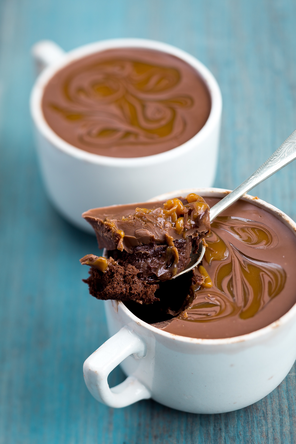

NUTELLA MUGCAKE

INGREDIENTS:
- Servings:1 Prep Time:2min Cook Time:5min
- 3 tablespoons all-purpose flour
- 3 tablespoons light brown sugar
- 2 tablespoons cocoa powder
- 2 tbsp chocolate chips
- 1/4 tsp baking powder
- Pinch of salt, optional
- 2 tablespoons milk
- 1 small egg
- 2 tablespoons vegetable oil
- 1/4 tsp vanilla extract
- 2 tbsp Nutella
- 1/4 tsp confectioners’ sugar for sprinkling
Directions:
1. Place the flour, sugar, cocoa powder, all but a few of the chocolate chops (reserve a few for sprinkling on at the end), the baking powder and salt into a jug or bowl. Stir to combine.
2.Add the milk, egg, oil and vanilla extract to the dry mixture. Stir together rapidly with a fork until combined.
3.Pour the mixture into a mug and microwave for 50 seconds.
4.Take out of the microwave and spoon the Nutella on top. Place back in the microwave for another 30-50 seconds – until the cake rises up in the mug like a souffle.
5.Remove from the microwave, top with the reserved chocolate chips and a sprinkling of confectioners’ sugar, then serve!
BACK TO HOME